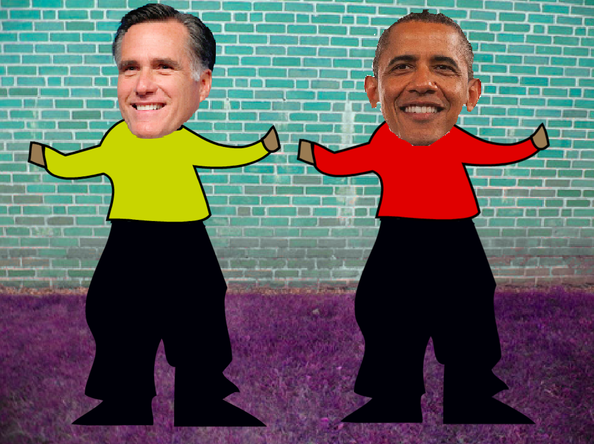

This next project was a remix of a template project called Remix this dance 2, this was remixed by my partner Jonathan "jon jon" and I. We added two different faces which were Mitt Romney and Barack Obama and made them dance to a make up rap battle made by epic rap battles of history.
We kept the same code which allowed the arrow keys to be pressed in order to make the model look as if it is dancing.